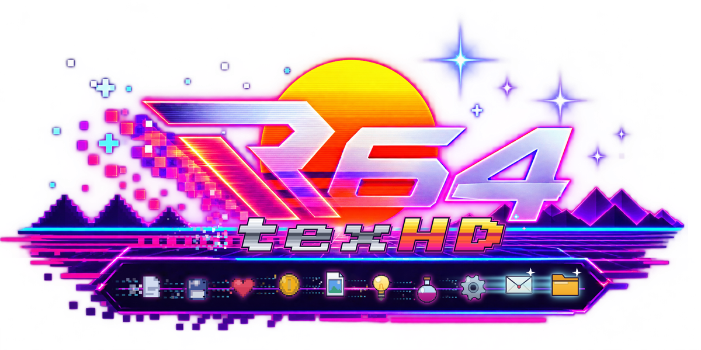
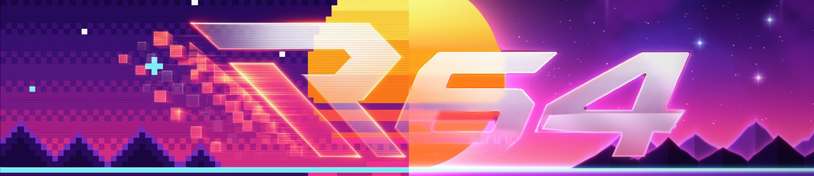

R64texHD - Reimagine Every Pixel

Make it HD
1
Upscale Textures
RT64 · Recomps
2
Convert RT64 Dump
3
Pack / Check .rtz
Ship Ports
4
Ship Mods .o2r
Classic Packs
5
Rice / GLideN64
ROM Tools
6
ROM Tools
Settings
About
◀